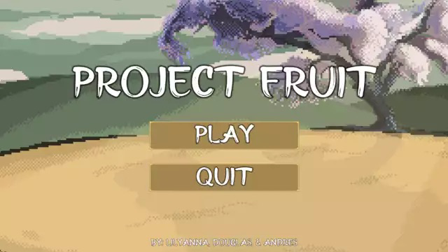

For CART’s final project for Interactive Game Design my group decided to go for a 2D project and use software called Unity. I used piskel for the 2D art of the game and learned more things about what is possible with layers and shortcuts. A challenge I faced was the overall theme of the game and what kind of style I wanted the game to portray. Cart’s Habit of mind helped remind me I should communicate with my team to get their opinion on it and create the 2D art of the final project. When I received their feedback it made the art look really good and overall looks great in the game. The password to the game is cart2022.
Play